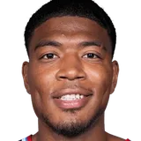

Shabazz Napier
2014-15 to 2019-20 · Career Map
His best final NBA finish was #9 of 30, with the 2017-18 Portland Trail Blazers. In his 345 games for 6 teams over 6 seasons they went 161–184 (46.7%), −23 games under .500, with an average final finish of 17.8.
Final NBA finish, season by season
Title Finals Other playoffs Missed the playoffs. #1 = champion; the dashed line is last place that season. Each point opens that season's final standings.
All 30 teams ranked in 2017-18, his best finish (#9)Teammate help
 Damian Lillard5.01 season
Damian Lillard5.01 season Chris Bosh1.01 season
Chris Bosh1.01 season Dwyane Wade1.01 season
Dwyane Wade1.01 season
Career
Regular seasons 1946-47 to 2026-27, games through Nov. 17, 2026. Records include 2026-27 to date; season counts and finishes use completed seasons. Each card opens its board. How we count.
Latest completed seasons
- 2019-20·
 Minnesota·#28 of 3019–45 · Missed the playoffs
Minnesota·#28 of 3019–45 · Missed the playoffs - 2018-19·
 Brooklyn·#14 of 3042–40 · Lost in the first round 1–4 to
Brooklyn·#14 of 3042–40 · Lost in the first round 1–4 to  Philadelphia
Philadelphia - 2017-18·
 Portland·#9 of 3049–33 · Lost in the first round 0–4 to
Portland·#9 of 3049–33 · Lost in the first round 0–4 to  New Orleans
New Orleans
Season by season
Newest first; every header sorts. Final NBA finish is the team's rank among all teams that season (#1 = champion) and opens that season's standings. "Without him" uses the team-season window; the span line counts only the games between his first and last game for the team.
| 2019-20 | #28 of 30 | 19–45 29.7% | Missed the playoffs | 36 of 64 | 9–27 25.0% | 6–8 42.9%span: 6–7, gap −21.2 | −17.9 | |
| 2019-20 | #23 of 30 | 25–47 34.7% | Missed the playoffs | 20 of 72 | 7–13 35.0% | 1–2 33.3%span: N/A, gap N/A | +1.7 | |
| 2018-19 | #14 of 30 | 42–40 51.2% | Lost 1st round 1–4 | 56 of 82 | 26–30 46.4% | 16–10 61.5%span: 15–8, gap −18.8 | −15.1 | |
| 2017-18 | #9 of 30 | 49–33 59.8% | Lost 1st round 0–4 | 74 of 82 | 46–28 62.2% | 3–5 37.5%span: 3–5, gap +24.7 | +24.7 | |
| 2016-17 | #15 of 30 | 41–41 50.0% | Lost 1st round 0–4 | 53 of 82 | 26–27 49.1% | 15–14 51.7%span: 14–14, gap −0.9 | −2.7 | |
| 2015-16 | #20 of 30 | 35–47 42.7% | Missed the playoffs | 55 of 82 | 23–32 41.8% | 12–15 44.4%span: 12–14, gap −4.3 | −2.6 | |
| 2014-15 | #21 of 30 | 37–45 45.1% | Missed the playoffs | 51 of 82 | 24–27 47.1% | 13–18 41.9%span: 9–11, gap +2.1 | +5.1 |
On/off, starts and close games
From the lineup data, 1996-97 on. On/off is net points per 100 possessions with him on the floor minus off, a different unit from the win-rate gaps. Started and off the bench are team records in those games; close games are those within 5 points in the last 5 minutes with him on the floor.
| 2019-20 | +1.9 | 5–17 22.7% | 4–10 28.6% | 2–13 13.3% | |
| 2019-20 | −1.5 | 4–6 40.0% | 3–7 30.0% | 1–4 20.0% | |
| 2018-19 | +1.5 | 0–2 0.0% | 26–28 48.1% | 3–2 60.0% | |
| 2017-18 | −0.5 | 5–4 55.6% | 41–24 63.1% | 11–11 50.0% | |
| 2016-17 | +3.8 | 1–1 50.0% | 25–26 49.0% | 4–4 50.0% | |
| 2015-16 | −2.5 | N/A | 23–32 41.8% | 2–4 33.3% | |
| 2014-15 | +1.7 | 4–6 40.0% | 20–21 48.8% | 5–7 41.7% |
Teammate help by season
Help = Teammates Score points for honors won that season by teammates who shared a game with him. How help works.
- 2019-20MinnesotaNo honored teammate
More: last season's honors
Help coming in (teammates' honors the season before): 1.0 · from Karl-Anthony Towns (1.0)
- 2019-20
 Washington
Washington

Rui Hachimura All-Rookie 2nd20 gMore: last season's honors and other teammates
Help coming in (teammates' honors the season before): 1.0 · from Bradley Beal (1.0)
Other teammates (no honors that season): Moritz Wagner 20 g, Troy Brown 20 g, Isaac Bonga 19 g, Jerome Robinson 18 g, Ishmael Smith 16 g, Bradley Beal 15 g, Davis Bertans 14 g, Thomas Bryant 14 g, Ian Mahinmi 9 g, Gary Payton II 8 g, Anzejs Pasecniks 7 g, Admiral Schofield 5 g, Garrison Mathews 3 g, Jerian Grant 3 g and 1 more
- 2018-19Brooklyn
 D'Angelo Russell All-Star55 g
D'Angelo Russell All-Star55 g
More: last season's honors and other teammates
Help coming in (teammates' honors the season before): 0
Other teammates (no honors that season): Ed Davis 55 g, Jarrett Allen 54 g, Joe Harris 50 g, Rondae Hollis-Jefferson 47 g, DeMarre Carroll 45 g, Spencer Dinwiddie 42 g, Rodions Kurucs 38 g, Jared Dudley 37 g, Allen Crabbe 33 g, Treveon Graham 24 g, Caris LeVert 22 g, Theo Pinson 14 g, Kenneth Faried 11 g, Dzanan Musa 8 g and 3 more
- 2017-18Portland
Damian Lillard All-NBA 1stAll-Star65 g
More: last season's honors and other teammates
Help coming in (teammates' honors the season before): 0
Other teammates (no honors that season): Pat Connaughton 74 g, Jusuf Nurkic 73 g, CJ McCollum 73 g, Evan Turner 71 g, Ed Davis 70 g, Al-Farouq Aminu 63 g, Zach Collins 60 g, Moe Harkless 53 g, Jake Layman 32 g, Meyers Leonard 31 g, Noah Vonleh 28 g, Caleb Swanigan 24 g, Wade Baldwin 7 g, Georgios Papagiannis 1 g
- 2016-17PortlandNo honored teammate
More: last season's honors
Help coming in (teammates' honors the season before): 3.2 · from Damian Lillard (3.0), CJ McCollum (0.2)
- 2015-16
 OrlandoNo honored teammate
OrlandoNo honored teammateMore: last season's honors
Help coming in (teammates' honors the season before): 0.2 · from Elfrid Payton (0.2)
- 2014-15
 Miami
Chris Bosh All-Star39 gDwyane Wade All-Star33 g
Miami
Chris Bosh All-Star39 gDwyane Wade All-Star33 g
More: last season's honors and other teammates
Help coming in (teammates' honors the season before): 4.2 · from Goran Dragic (2.2)
Other teammates (no honors that season): Mario Chalmers 50 g, Luol Deng 43 g, James Ennis 43 g, Udonis Haslem 37 g, Norris Cole 36 g, Shawne Williams 36 g, Chris Andersen 34 g, Hassan Whiteside 24 g, Justin Hamilton 21 g, Danny Granger 20 g, Josh McRoberts 17 g, Tyler Johnson 16 g, Henry Walker 8 g, Goran Dragic 7 g and 4 more
Compare with a peer
 Shabazz Napier vs Tyler JohnsonCareers centered on 2017-18 and 2017-18; help 1.3 and 1.7 points per season; own honors 0.0 and 0.0 per season; 345 and 354 games.
Shabazz Napier vs Tyler JohnsonCareers centered on 2017-18 and 2017-18; help 1.3 and 1.7 points per season; own honors 0.0 and 0.0 per season; 345 and 354 games. Shabazz Napier vs TJ WarrenCareers centered on 2017-18 and 2017-18; help 1.3 and 1.5 points per season; own honors 0.0 and 0.0 per season; 345 and 385 games.
Shabazz Napier vs TJ WarrenCareers centered on 2017-18 and 2017-18; help 1.3 and 1.5 points per season; own honors 0.0 and 0.0 per season; 345 and 385 games. Shabazz Napier vs Michael Carter-WilliamsCareers centered on 2017-18 and 2016-17; help 1.3 and 1.2 points per season; own honors 0.0 and 0.1 per season; 345 and 395 games.
Shabazz Napier vs Michael Carter-WilliamsCareers centered on 2017-18 and 2016-17; help 1.3 and 1.2 points per season; own honors 0.0 and 0.1 per season; 345 and 395 games.
Record against each opponent
Regular season, completed seasons: 345 games, 161–184, against 30 franchises. Grouped by franchise (named as today); game lists keep each team's name that season.
| Games list | |||||||
|---|---|---|---|---|---|---|---|
| 15 | 5–10 | 33.3% | −5 | 0–1 (0–2 in games) | 2014-15 to 2019-20 | ||
| 14 | 12–2 | 85.7% | +10 | N/A | 2014-15 to 2019-20 | ||
| 14 | 7–7 | 50.0% | 0 | N/A | 2014-15 to 2019-20 | ||
| 14 | 9–5 | 64.3% | +4 | N/A | 2014-15 to 2019-20 | ||
| 14 | 5–9 | 35.7% | −4 | N/A | 2014-15 to 2019-20 | ||
| 14 | 10–4 | 71.4% | +6 | N/A | 2014-15 to 2019-20 | ||
| 14 | 8–6 | 57.1% | +2 | N/A | 2014-15 to 2019-20 | ||
| 14 | 4–10 | 28.6% | −6 | N/A | 2014-15 to 2019-20 | ||
| 13 | 3–10 | 23.1% | −7 | N/A | 2014-15 to 2019-20 | ||
| 13 | 1–12 | 7.7% | −11 | N/A | 2014-15 to 2019-20 | ||
| 13 | 6–7 | 46.2% | −1 | N/A | 2014-15 to 2019-20 | ||
| 12 | 7–5 | 58.3% | +2 | N/A | 2014-15 to 2019-20 | ||
| 12 | 6–6 | 50.0% | 0 | N/A | 2014-15 to 2019-20 | ||
| 12 | 7–5 | 58.3% | +2 | N/A | 2014-15 to 2018-19 | ||
| 12 | 11–1 | 91.7% | +10 | N/A | 2014-15 to 2019-20 | ||
| 12 | 6–6 | 50.0% | 0 | N/A | 2014-15 to 2019-20 | ||
| 12 | 6–6 | 50.0% | 0 | 0–1 (0–3 in games) | 2014-15 to 2019-20 | ||
| 11 | 4–7 | 36.4% | −3 | N/A | 2014-15 to 2019-20 | ||
| 11 | 4–7 | 36.4% | −3 | 0–1 (0–4 in games) | 2014-15 to 2019-20 | ||
| 11 | 1–10 | 9.1% | −9 | N/A | 2014-15 to 2019-20 | ||
| 11 | 3–8 | 27.3% | −5 | N/A | 2014-15 to 2019-20 | ||
| 11 | 4–7 | 36.4% | −3 | N/A | 2014-15 to 2018-19 | ||
| 10 | 4–6 | 40.0% | −2 | N/A | 2014-15 to 2019-20 | ||
| 9 | 5–4 | 55.6% | +1 | N/A | 2015-16 to 2019-20 | ||
| 9 | 2–7 | 22.2% | −5 | N/A | 2014-15 to 2019-20 | ||
| 8 | 4–4 | 50.0% | 0 | N/A | 2014-15 to 2018-19 | ||
| 8 | 3–5 | 37.5% | −2 | N/A | 2014-15 to 2018-19 | ||
| 8 | 6–2 | 75.0% | +4 | N/A | 2014-15 to 2019-20 | ||
| 8 | 7–1 | 87.5% | +6 | N/A | 2014-15 to 2018-19 | ||
| 6 | 1–5 | 16.7% | −4 | N/A | 2014-15 to 2019-20 |
Rows add up to his career record in his games. A playoff series counts when he played in it; early round-robin games show as games only. How we count.
Playoffs, with and without him
| 2018-19 | Lost in the first round 1–4 to | #14 of 30 | 3 of 5 | 0–3 0.0% | 1–1 50.0% | −50.0 | |
| 2017-18 | Lost in the first round 0–4 to | #9 of 30 | 2 of 4 | 0–2 0.0% | 0–2 0.0% | 0.0 | |
| 2016-17 | Lost in the first round 0–4 to | #15 of 30 | 4 of 4 | 0–4 0.0% | N/A | N/A |
Arrival and departure
Team wins per 82 games the season before he arrived vs his first season there, and his last season vs the season after he left. Per 82 so short seasons compare fairly. These are team records, not a measure of what he did.
| Left | 2020-21 | 2019-20: 19–45 24.3 per 82 | 2020-21: 23–49 26.2 per 82 | +1.9 wins | |
| Left | 2020-21 | 2019-20: 25–47 28.5 per 82 | 2020-21: 34–38 38.7 per 82 | +10.2 wins | |
| Arrived | 2019-20 | 2018-19: 36–46 36.0 per 82 | 2019-20: 19–45 24.3 per 82 | −11.7 wins | |
| Arrived | 2019-20 | 2018-19: 32–50 32.0 per 82 | 2019-20: 25–47 28.5 per 82 | −3.5 wins | |
| Left | 2019-20 | 2018-19: 42–40 42.0 per 82 | 2019-20: 35–37 39.9 per 82 | −2.1 wins | |
| Arrived | 2018-19 | 2017-18: 28–54 28.0 per 82 | 2018-19: 42–40 42.0 per 82 | +14.0 wins | |
| Left | 2018-19 | 2017-18: 49–33 49.0 per 82 | 2018-19: 53–29 53.0 per 82 | +4.0 wins | |
| Arrived | 2016-17 | 2015-16: 44–38 44.0 per 82 | 2016-17: 41–41 41.0 per 82 | −3.0 wins | |
| Left | 2016-17 | 2015-16: 35–47 35.0 per 82 | 2016-17: 29–53 29.0 per 82 | −6.0 wins | |
| Arrived | 2015-16 | 2014-15: 25–57 25.0 per 82 | 2015-16: 35–47 35.0 per 82 | +10.0 wins | |
| Left | 2015-16 | 2014-15: 37–45 37.0 per 82 | 2015-16: 48–34 48.0 per 82 | +11.0 wins | |
| Arrived | 2014-15 | 2013-14: 54–28 54.0 per 82 | 2014-15: 37–45 37.0 per 82 | −17.0 wins |
Seasons split between teams
Each team's record before his first game for it, inside his window (games with and without him) and after his last game, in the seasons he played for two or more teams.
| 2019-20 | Oct. 23, 2019 to Feb. 3, 2020 | N/A | 15–35 30.0% | 4–10 28.6% | 36 | |
| 2019-20 | Feb. 7, 2020 to Aug. 7, 2020 | 17–32 34.7% | 8–15 34.8% | N/A | 20 |
Best duos
Team record in regular-season games both played, top 10 by win %, at least 50 games together.
 Zach Collins
39–21 65.0%
Zach Collins
39–21 65.0% Jusuf Nurkic
56–34 62.2%
Jusuf Nurkic
56–34 62.2% Al-Farouq Aminu
61–40 60.4%
Al-Farouq Aminu
61–40 60.4% Evan Turner
64–45 58.7%
Evan Turner
64–45 58.7%- Damian Lillard
64–47 57.7%
 Pat Connaughton
61–45 57.5%
Pat Connaughton
61–45 57.5% CJ McCollum
70–54 56.5%
CJ McCollum
70–54 56.5% Jake Layman
38–30 55.9%
Jake Layman
38–30 55.9% Moe Harkless
58–47 55.2%
Moe Harkless
58–47 55.2% Ed Davis
81–72 52.9%
Ed Davis
81–72 52.9%